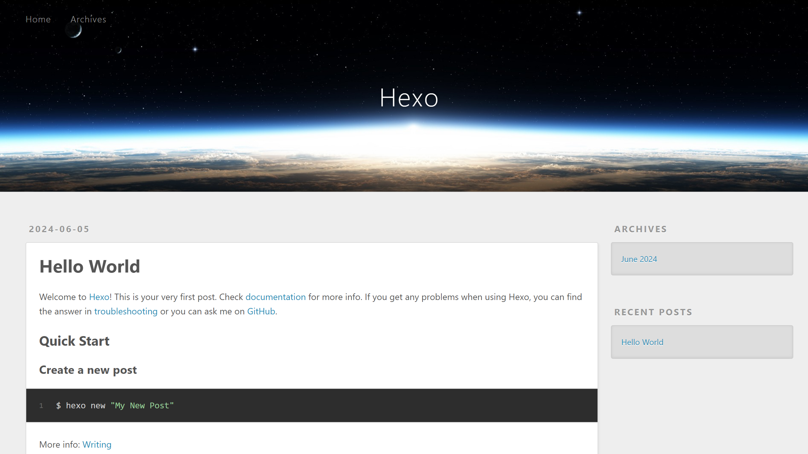

Github + Hexo + Butterfly 搭建博客（三） - Hexo 部署！
SSH Key
如果你的 SSH Key 未安装，执行以下命令（ @example.com 是 Github 账户的注册邮箱）：
1 | $ ssh-keygen -t rsa -C "@example.com" |
执行命令后，ENTER 三次后出现 id_rsa.pub 文件的路径，使用记事本打开 id_rsa.pub 文件并复制其中的内容。
Github 仓库
创建名为 x.github.io 的新仓库，X 为 Gxithub 账户名。
Github 新建 SSH key
打开 Github Settings 中的 SSH and GPG keys，点击新建一个 SSH Key 。
其中 Title 随意, Key 是 id_rsa.pub 文件的内容。
使用以下命令来测试 SSH 连接是否成功：
1 | $ ssh -T git@github.com |
出现以下信息代表成功：
1 | Hi X! You've successfully authenticated, but GitHub does not provide shell access. |
部署 Hexo
首先确认是否为 master 分支，如果为 main 分支，请在仓库 Setting 更改。
打开 <folder> 文件夹下的 _config.yml 文件，修改 url 和 deploy ，repo 后填 Code > SSH 的内容。
1 | # URL |
第一次需要安装 git 部署方式依赖。
1 | $ npm install hexo-deployer-git --save |
使用如下命令清除缓存文件和已生成的静态文件、重新生成静态文件并启动服务器。
1 | $ hexo clean |
或者
1 | $ hexo c |
访问 https://x.github.io/ ，如果看到 http://localhost:4000/ 相同的界面就证明你的部署成功了！
如果访问 https://x.github.io/ 部署或者修改没有生效属于正常现象，因为 Github 将仓库代码文件部署到服务器上需要时间。
1 | $ hexo clean |
日常撰写文章想要实时看到文章效果的话，使用 hexo serve 。
hexo clean 、 hexo generate 和 hexo deploy 在修改配置、上传文章中经常使用。
注意修改配置之后必须要 hexo clean ，上传文章不必要。
本博客所有文章除特别声明外，均采用 CC BY-NC-SA 4.0 许可协议。
评论